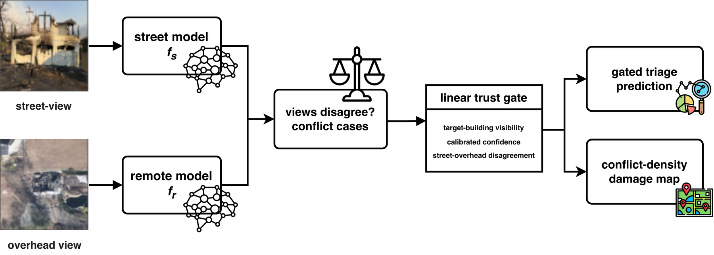
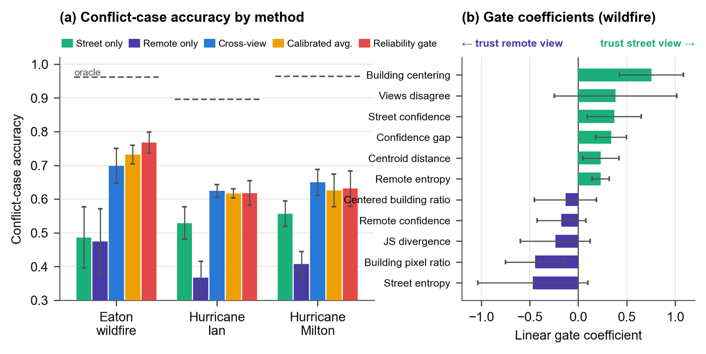
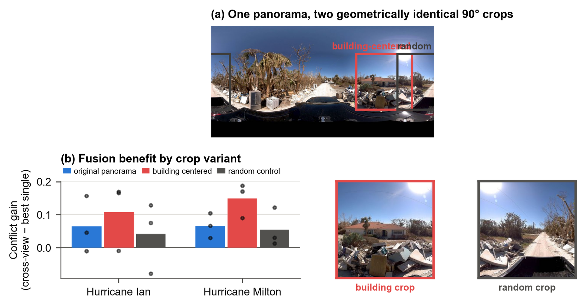
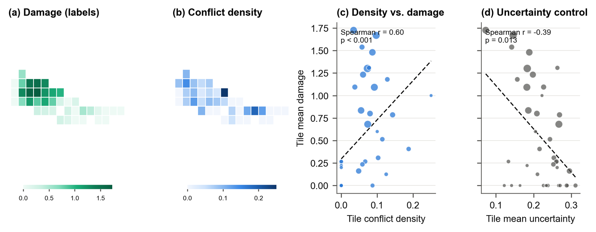
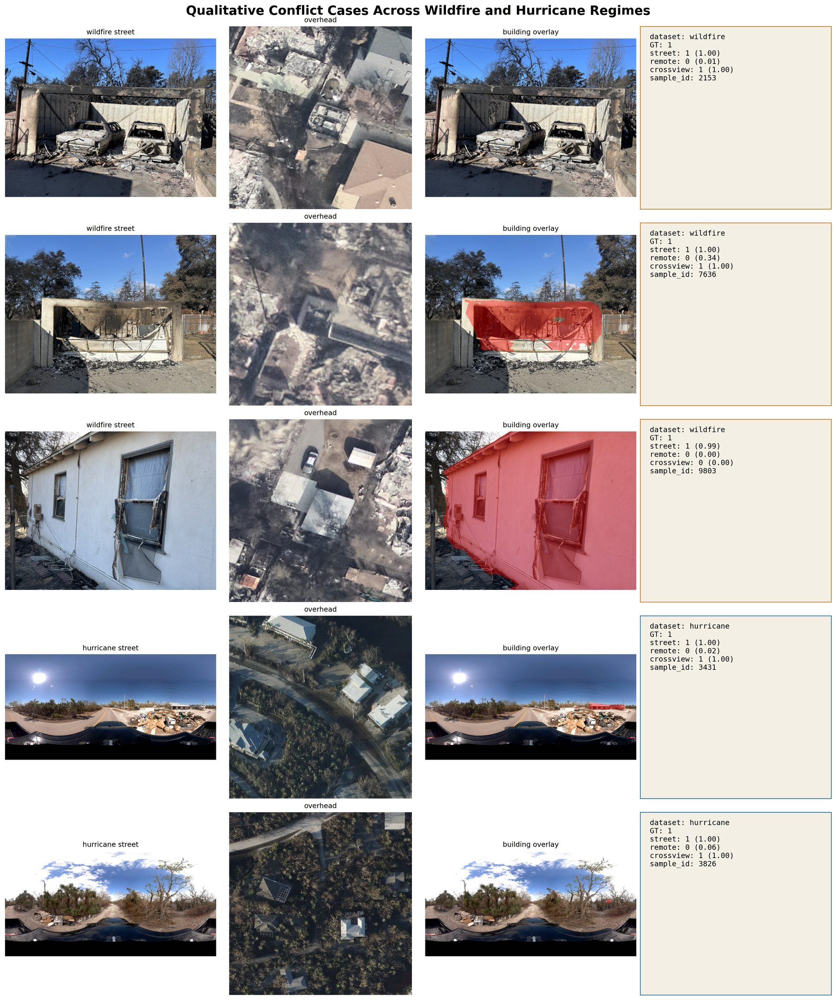
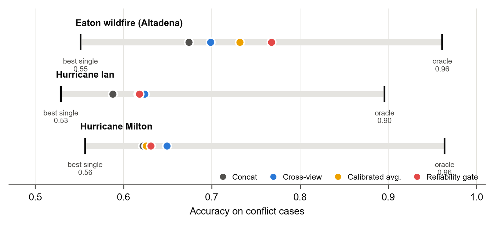

Which view should be trusted, where, and why?
Trust the View That Sees the Target: Reliability-Gated Cross-View Disaster Damage Assessment
Cross-view fusion of street-level and overhead imagery is almost always symmetric: both views are trusted equally everywhere. Measured on the cases where the two views disagree, an oracle that trusts the correct view would still add 0.19–0.32 accuracy over the best fusion method across three real disasters. A linear, interpretable gate over building visibility recovers part of it where ground photographs are aimed at the building, and a controlled cropping experiment probes why.
News: the short paper has been accepted as a lightning talk at GeoSearch 2026 (5th ACM SIGSPATIAL Workshop on Searching and Mining Large Collections of Geospatial Data), Riverside, CA, 3 November 2026.
Central Thesis
Do not ask whether fusion helps. Ask which view to believe on each sample.
Most records in a paired street/overhead collection are easy: both views agree and fusion adds little. The operationally interesting records are the conflict cases, the 10–33% of samples on which independently trained single-view models disagree. Conflicts concentrate exactly where one sensor is blind: a facade intact from above but gutted at street level, or a roof destroyed above vegetation that hides it from the road.
Framework
From conflict cases to a trust decision and a map.
Independently trained street and remote models define the conflict cases. A linear gate over building visibility, calibrated confidence, and cross-view disagreement decides how much to trust each predictor per sample. The spatial density of conflicts doubles as a damage map that needs no labels.

The Oracle Gap
Symmetric fusion leaves most view-reliability information unused.
An oracle that picks whichever single view is correct per conflict sample exceeds the better single view by 0.37–0.48 conflict accuracy and the best evaluated fusion method by 0.19–0.32. Under converged, calibrated training, end-to-end learned fusion does not reliably beat calibrated probability averaging, a negative result worth absorbing.
closure(m) = [accC(m) − accC(best single)] / [accC(oracle) − accC(best single)]
- Conflict subset C
- Test samples where the street and remote argmax predictions differ: 9.6% (Eaton), 33.2% (Ian), 25.7% (Milton).
- Oracle
- Correct if either single view is correct. It only chooses which of two fixed models to trust.
- Closure
- Fraction of the gap a method recovers. Computed from the five-seed means. Gate 0.59 on the wildfire; no method exceeds 0.26 on the panoramic datasets.
Reliability Gate
A linear gate over eleven interpretable features beats every fusion baseline where it should, and never hurts.
| Method | Eaton wildfire | Hurricane Ian | Hurricane Milton |
|---|---|---|---|
| street_only | 0.486 | 0.529 | 0.557 |
| remote_only | 0.475 | 0.367 | 0.407 |
| crossview (end-to-end fusion) | 0.699 | 0.624 | 0.649 |
| calibrated probability averaging | 0.732 | 0.617 | 0.626 |
| reliability gate (linear) | 0.768 | 0.618 | 0.631 |
| oracle single view | 0.961 | 0.896 | 0.964 |
Conflict-case accuracy, five-seed means. On the property-centric wildfire imagery the gate delivers +0.072 over end-to-end fusion and +0.051 over calibrated averaging (pooled sign-flip permutation tests, p ≤ 0.0001). On the panoramic hurricane imagery, where street views rarely see the target building, it is statistically indistinguishable from end-to-end fusion. The two-expert (street vs. overhead) variant reads as one rule: trust the street view when it is confident and the building is centered.

Field-of-View Intervention
Aiming the ground view at the building raises the value of fusion.
Hurricane panoramas are cropped to 90° windows that are either centered on the detected building or placed at a random azimuth. The two variants are geometrically identical. Building-centered crops raise the conflict gain of fusion (Ian 0.064 → 0.109, Milton 0.067 → 0.149); random crops do not, and the building-minus-random contrast is positive in 6/6 dataset–seed pairs (three seeds, three-epoch schedule). The gain arrives even though building-centered crops lower street-only accuracy. The segmenter locates built structures rather than the specific target building, so this supports, rather than proves, target alignment as the mechanism.

Conflict Density as a Damage Map
Disagreement between two sensors is a spatial signal, not just an error mode.
Aggregated to tiles, the fraction of conflict cases predicts wildfire damage without any labels (Spearman r = 0.615 over 25 overhead tiles; r = 0.60 on a 0.01° grid; nominal p-values, since damage is spatially autocorrelated). The hurricane signal is weaker (Milton r = 0.289, n.s.). The natural control fails in the most instructive way: single-view uncertainty anti-correlates with damage, because burned-to-the-ground parcels are easy, confident classifications. A conflict-density raster can be computed within hours of acquiring paired imagery.

Qualitative Evidence
Conflict cases show what each view can and cannot see.
Street view, overhead patch, per-model predictions, and the building segmentation overlay that feeds the gate, for wildfire and hurricane conflicts resolved by fusion and one failure case.

Data and Protocol
Three disasters, two ground-view observation regimes, one converged protocol.
Eaton wildfire (Altadena, CA)
CAL FIRE Damage Inspection photographs from the January 2025 fire, paired with post-event VHR overhead tiles. Property-centric ground view; ordinal three-class task; split by property and tile.
Regimeproperty-centric
Conflict rate9.6%
Gate closure0.59
Hurricane Ian (CVIAN)
The released CVDisaster pairing: Mapillary panoramas over Sanibel Island with 27 cm satellite imagery. An audit against the official position GeoJSON showed the release split leaks Mapillary sequences; a repaired spatial-block split with a 25 m buffer lowers macro-F1 by 0.05–0.10.
Regimepanoramic
Conflict rate33.2%
Gate closure0.24
Hurricane Milton (FL)
Street-view panoramas paired with satellite tiles after the October 2024 hurricane, constructed analogously to CVIAN. The smallest dataset, which widens the gate's intervals.
Regimepanoramic
Conflict rate25.7%
Gate closure0.18

What This Work Claims
Cross-view disaster assessment should be conflict-aware and reliability-gated.
- Evaluate fusion on the cases where the views disagree, and report how much of the oracle gap a method closes.
- Once single-view models are converged and calibrated, simple averaging is a strong baseline; the advantage of learning lies in asymmetric, reliability-aware arbitration.
- Building-oriented framing of the street view raises the value of fusion. Capture policy is itself a lever: aim cameras at structures.
- Conflict density is a label-free damage indicator on the wildfire that plain uncertainty does not replicate; it still needs spatially independent validation.
- Split by object and location. Release-style random or index-based splits overstate spatial generalization.